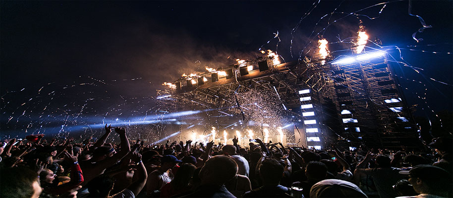
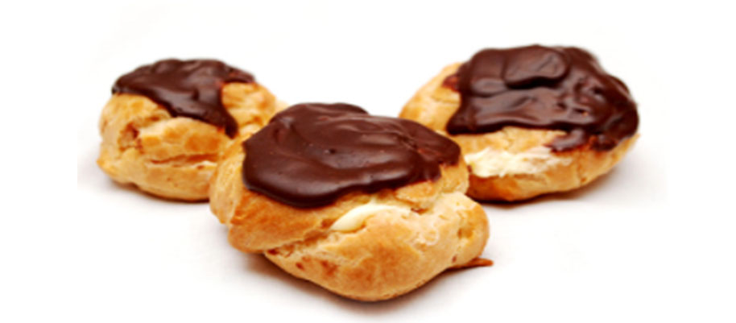

Discover
Iceland has a variety of traditions and events that anyone can participate in. One of the most
popular
annual events that is held would be Verslunarmannahelgi. Whatson describes Verslunarmannahelgi
(Merchant’s Weekend for non-Icelandic speakers) as a three-day weekend in the beginning of August.
It’s
the biggest traveling weekend in Iceland and in many places it’s celebrated with what is known as
útihátíð (outdoor festival). It includes a wide range of activities for individuals. These
activities
include family centred activities during the day, and concerts/dances at night. It’s a great way to
experience Icelandic nature and to achieve a better understanding of Icelandic culture. Icelandmag
lists
festivals that take place during this holiday which include: The Festival of the Nation in Westman
Islands, Downtown Reykjavík music festival, Mud-football, Music in the West fjords, and Herring
adventure family festival in Siglufjörður town. The Festival of the Nation in Westman Islands is the
largest bank holiday weekend each year. This event averages up to 16,000 guests that party around
the
clock for at least three days. Each of these festivals highlights different aspects of Icelandic
culture
that can be enjoyed by all.


A tradition that is favored by many would be Bolludagur, or Bun Day. It is celebrated several weeks
before Easter which includes Icelanders baking millions of buns. Icelandmag records that every year
Icelanders consume an excess of one million cream buns. Local bakers produce an estimated one
million
buns each year, in addition to the ones baked at home. Traditionally, on this day people are not
supposed to buy the buns, instead it must be earned by spanking others with a decorated wooden
stick.
However, Helloiceland states that this tradition is meant for children. If they manage to wake up
their
parents by spanking them while screaming for Bolla three times, the parents must then reward them by
giving them the sweet pastry. The stick used that is described by Icelandmag, is a decorated short
stick
made with colorful paper, and called a "bolludagsvöndur" or bun-day wand to spank their parents and
other grown-ups. This event is not limited on traditional terms, and can be enjoyed by a variety of
individuals.